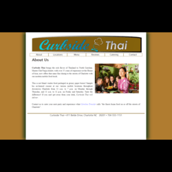
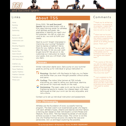
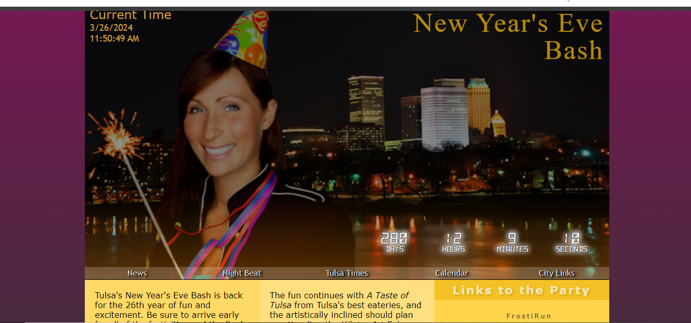
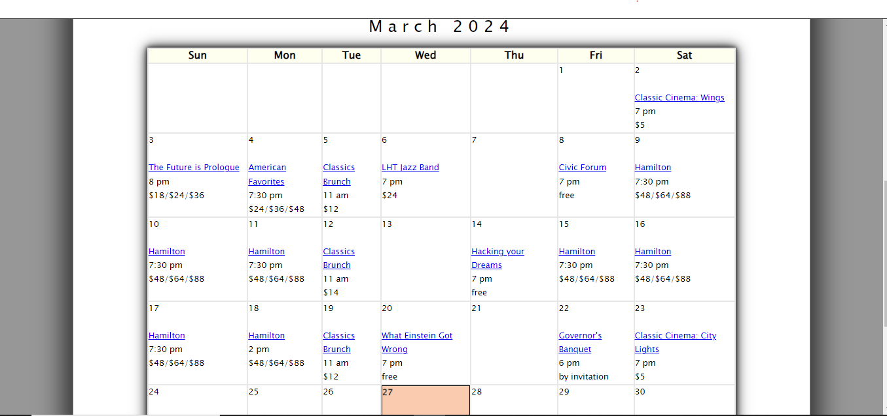
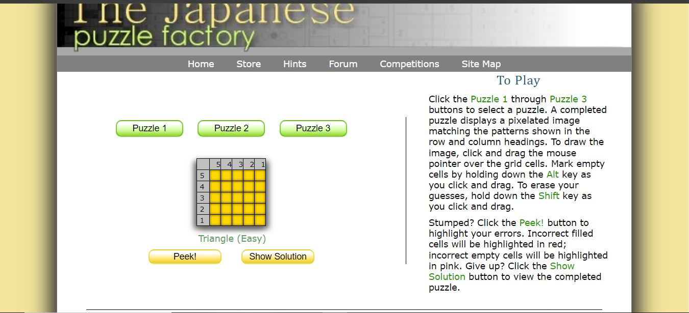

Learning Activities
Activity 1-1: Learn About HTML: Curbside Thai
In this activity, I explored the basics of HTML and created a simple website for a fictional Thai restaurant.
 View ActivityActivity 1-3: Learn About CSS: Tri and Succeed Sports
In this activity, I learned how to style web pages using CSS and applied those skills to create a visually appealing website for a sports equipment store.
 View ActivityActivity 5-1: Learn About JavaScript: Tulsa's New Year's Bash
In this activity, I learned how to make web pages functional using js and applied those skills to create a visually appealing website.
 View Activity5-3 Learn About JS Arrays, Loops, and Conditions: Lyman Hall Theater
In this activity, I learned about arrays, map functions, data types js and applied those skills to create a visually appealing website.
 View Activity6-1 Learn About JavaScript Events & Styles: Japanese Puzzle Factory
In this activity, I learned about events, styles and applied those skills to create a visually appealing website.
 View Activity